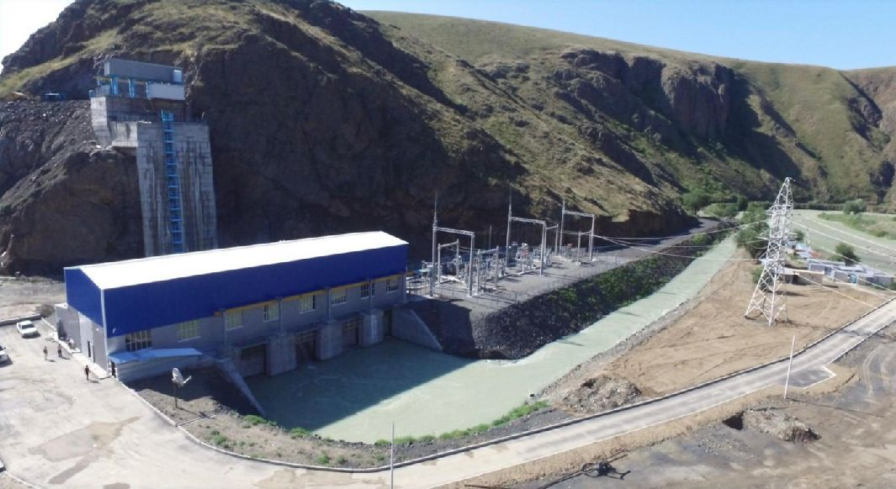
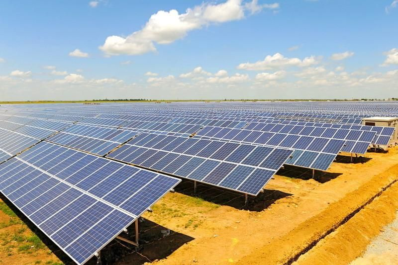
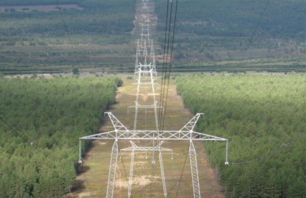
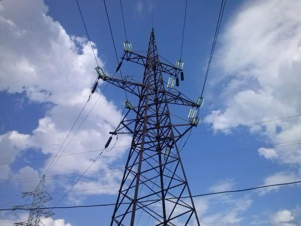
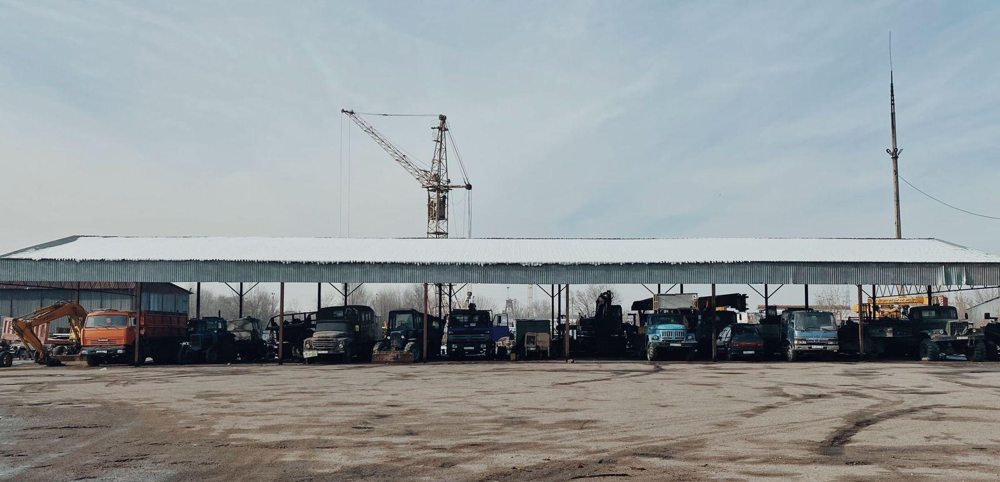
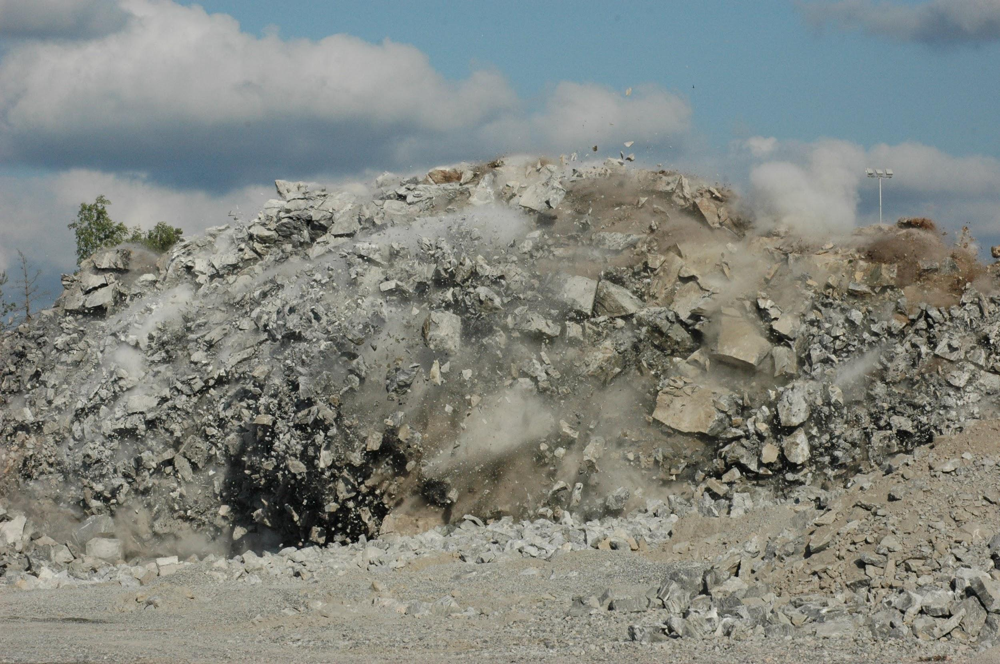
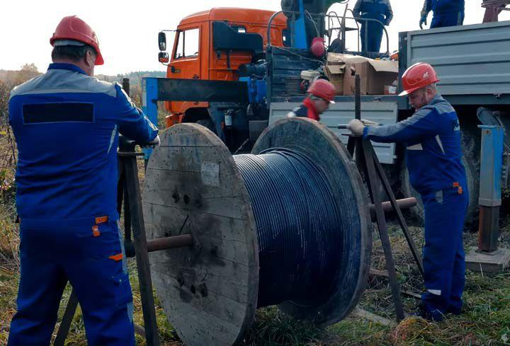

НАДЁЖНОСТЬ, ПРОВЕРЕННАЯ ВРЕМЕНЕМ
Строим энергетическую инфраструктуру Казахстана с 1976 года
Линии электропередачи, подстанции, гидро- и солнечная энергетика, промышленные и специальные работы.
Смотреть проектыОпыт энергетического строительства с 1976 года
Компания создана как Покровское СМУ треста «Казэлектросетьстрой». Основное направление - строительство линий электропередачи и подстанций напряжением 35, 110, 220 и 500 кВ.
1976год основания35-500 кВкласс напряжения100 МВтсолнечная энергетика
Основные направления
Подстанции
Гидроэнергетика
Солнечная энергетика
Специальные работы
Производственная база
Избранные объекты

ГЭС-2 на реке Лепсы

Солнечная электростанция 100 МВт

Линии электропередачи 500 кВ

Модернизация ПС «Сокол»



+7 701 799 64 47